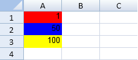

SpreadJS supports conditional formatting in cells. You can use various styles to set the visual appearance of the formatted cell.
Conditional formatting can be applied to worksheets via conditional formatting rules. These rules have an order of precedence. The last rule in a list of rules has the highest precedence. The first rule in the list has the lowest precedence. By default, new rules are always added last and have the highest precedence. When two rules conflict, the rule with higher precedence is applied. If two rules do not conflict (one rule uses a bold font and the other rule uses a cell backcolor), then both rules are applied.
There are several types of conditional rules. They are as follows:
The following table lists the rules and their descriptions:
| Rule | Description |
| Average rule | The average rule checks for values above or under the average. |
| Cell value rule | The cell value rule compares values. |
| Date rule | The date rule compares dates. |
| Formula rule | The formula rule allows you to use formulas when checking the condition. |
| Data bar rule | The data bar rule uses a bar that is displayed as the background for each cell. The length of the bar is based on the cell value. |
| Icon set rule | The icon set rule displays icons based on the values. You can specify the type of icon and whether to show the icon or the icon and the data in the cell. |
| Specific text rule | The specific text rule searches for text strings. |
| Top 10 rule | The top 10 rule checks for values in the top or bottom of the range. |
| Unique rule | The unique rule checks to see if the value is the only one of that value in the range. |
| Duplicate rule | The duplicate rule checks for duplicate values. |
|
Scale rule |
The scale rule uses a sliding color scale. For example if 1 is yellow and 50 is green, then 25 would be light green. The scale rule has an option for two or three colors in the scale. The following image is for a three scale rule.  |